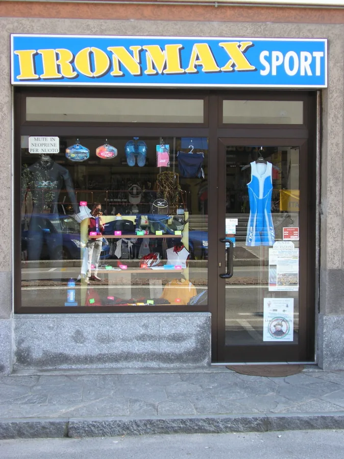

Consulenza personalizzata
Max, il titolare, è in negozio ogni giorno e ti aiuta a scegliere l'articolo più adatto alle tue esigenze.
Dal 2006 ad Azzate, in Via Piave 94: articoli per nuoto, ciclismo, running e triathlon, scelti e consigliati da chi li prova.
Il negozio nasce nella primavera del 2006 da una passione sfrenata per tutto lo sport e in particolare per il triathlon.
Ironman: 3,8 km di nuoto, 180 km di bici e 42,195 km di corsa, il sogno di tutti i triatleti. Non solo da qui deriva il nome del negozio: IRON, il ferro, e MAX, il nome del titolare.
All'interno puoi trovare un vasto assortimento di articoli sportivi per nuoto, ciclismo, running e triathlon, per soddisfare le esigenze dello sportivo, dal debuttante all'agonista che cerca prodotti sempre più tecnologici.
Max

Max, il titolare, è in negozio ogni giorno e ti aiuta a scegliere l'articolo più adatto alle tue esigenze.
I prodotti vengono testati continuamente sui campi gara di tutte le specialità, anche dal titolare, per conoscerne al meglio le caratteristiche.
Nuoto, ciclismo, running e triathlon: dal debuttante all'agonista, con marchi della tecnologia sportiva come Brooks, Mizuno e Castelli.
Max promette trattamenti particolari e prezzi vantaggiosi. Per saperne di più passa in negozio o chiama.
Foto del negozio. Clicca su un'immagine per ingrandirla.